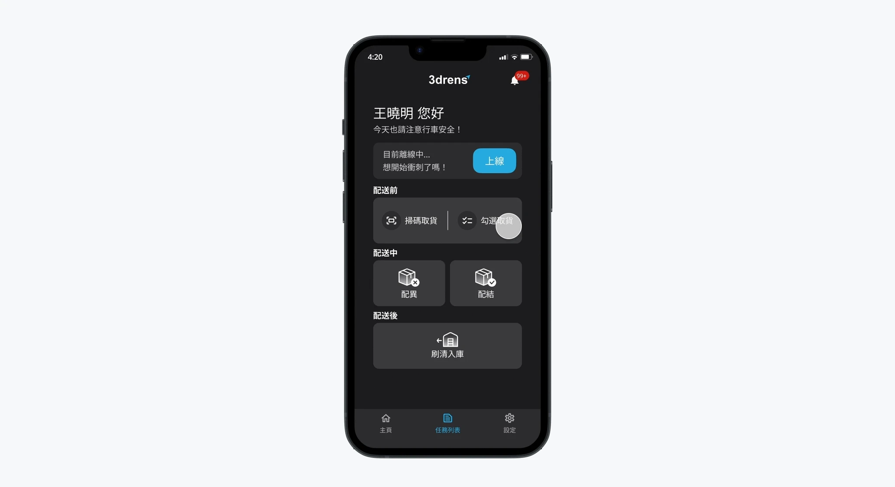
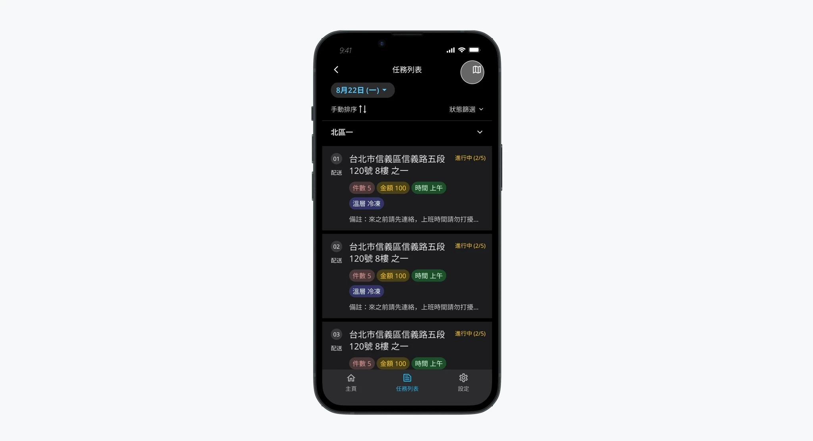
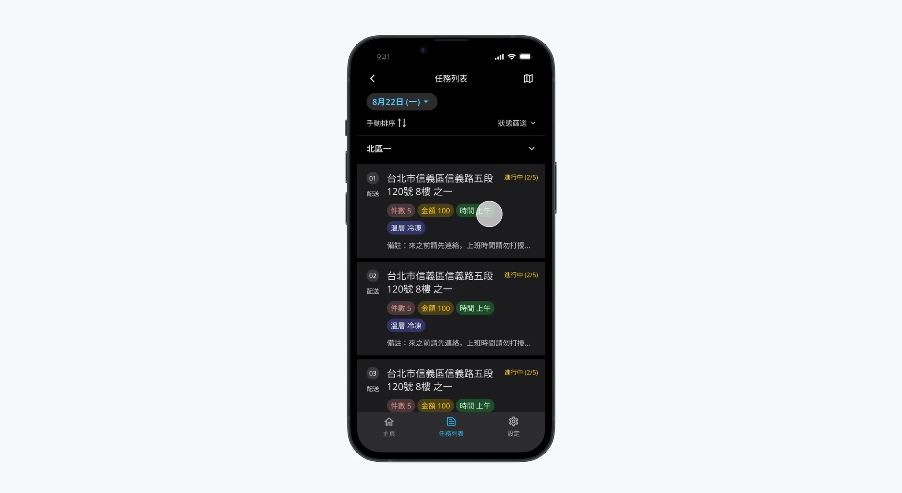

Empowering small-logistics drivers to record delivery progress on the go — without stopping, without paper, without losing track.

Designing a logistics app for drivers who can't stop to use it — built around the constraints of driving, hauling goods, and working under unpredictable light.
The most critical phase of building this app wasn't the feature set — it was understanding the moment of use. Drivers are in motion, handling goods, managing daylight glare and nighttime screen brightness, all while trying to stay safe. The design had to work within those constraints, not around them.
From paper records to real-time visibility
3drens Inc. is a SaaS company building logistics management tools for small and medium-sized logistics companies in Taiwan. The TMS (Transportation Management System) App is one of their core products — the mobile counterpart to the web-based management dashboard used by logistics managers.
Before the app, drivers tracked deliveries on paper: handwritten logs, signed receipts, manually collected at the end of each shift. This created a visibility gap for managers — they had no way to know delivery status until drivers returned to base. Exceptions, failed deliveries, and status updates couldn't be communicated until hours after they happened.
The business goal was clear: complete the MVP and ship it within a month to enable initial customer adoption. My job was to translate that urgency into a product that drivers would actually use — not reluctantly tolerate.
Complete design and MVP development within a month, enabling rapid launch for customer use. The app needed to connect drivers and logistics managers in real time — making delivery status, exceptions, and confirmations visible as they happened.
The phone is the last thing a driver wants to deal with
Before designing any screens, I needed to understand the physical reality of a driver's day. Secondary research on logistics worker behavior, combined with internal interviews with the operations team, surfaced a consistent picture.
-
One-handed operation is the default Drivers are constantly switching between driving, handling packages, and coordinating with recipients. Their hands are rarely free. Any interaction requiring two hands or sustained attention is a friction point — and a safety risk.
-
Outdoor screens are hard to read in both extremes Under direct sunlight, low-contrast or small-text interfaces become unreadable. At night, a fully bright screen is blinding in the cab of a vehicle. The app had to perform in both conditions without manual adjustment.
-
The adjustment period is the highest-risk phase Introducing any new tool into a driver's workflow creates friction during adoption. If the app required more cognitive load than paper in the first week, drivers would abandon it. The onboarding experience and task flow needed to feel immediately intuitive — not just eventually learnable.
How can we enable drivers to record delivery status in unpredictable delivery scenarios — without creating new risks or interruptions to their core job?
From this, I mapped the key moments in a driver's daily workflow where recording was required: vehicle check-in at the start of shift, route planning before departure, package-by-package delivery confirmation throughout the day, exception handling (failed deliveries, recipient unavailable), and end-of-day return. These moments became the skeleton of the app's information architecture.

Fast alignment, then structure, then screens
Given the one-month timeline, the design process had to be tight. I ran three overlapping phases in parallel rather than sequentially.
-
1
Hand-drawn wireframes for rapid team alignment I started with paper sketches rather than Figma — not to save time, but to keep discussion at the concept level before committing to layout. This meant the team could challenge structural decisions early, before I'd invested hours making them look polished.
-
2
Information architecture before interface design I built out the IA in full before designing individual screens. With nearly 50 states and edge cases to account for (vehicle types, multi-stop routes, exception categories), having a shared map of the product prevented inconsistencies in naming, flow, and navigation.
-
3
Conceptual sketches to communicate element hierarchy Once the IA was agreed upon, I moved to medium-fidelity sketches that showed the spatial layout of each screen — where primary actions sat, how secondary information was deprioritised, and what the tap target hierarchy looked like. Engineers used these to begin frontend scaffolding in parallel with my visual design work.

Three features, one coherent daily workflow
Every screen maps to a specific moment in the driver's day. The goal wasn't to add capability — it was to replace the mental overhead of paper record-keeping with something that required less attention, not more.
Before any delivery begins, drivers log vehicle information for the day — which vehicle, current mileage. Once submitted, the system marks the vehicle as "in use" and unlocks the rest of the app. This prevents data attribution errors when multiple drivers share vehicles, and gives managers a clean usage record without a separate tracking system.

Drivers control their own delivery sequence — as long as everything gets done within the window. The route view offers map and list modes: the map shows optimized route suggestions and color-coded sequence markers; the list shows task details, estimated times, and a direct call button for recipient contact. Drivers switch based on context — map when orienting, list when executing.

This replaces the paper signature and handwritten record entirely. For each package, drivers confirm delivery, photograph proof-of-receipt, and flag exceptions — all from a single screen designed to be completed without sustained attention. Managers see status updates in real time, eliminating the end-of-day information blackout that paper records created.

What a two-month internship taught me about shipping under pressure
-
1
Validate assumptions even without clients in the room. We had no direct access to drivers during the design phase. But that didn't mean we had to guess — internal interviews with operations managers, secondary research on logistics worker behavior, and ongoing alignment with the PM gave us enough to make grounded decisions. The lesson wasn't "always get user access." It was: find every available proxy and use them rigorously.
-
2
Simplicity is the result of iteration, not the starting point. Early versions of the delivery task flow had too many steps and too many options. Each round of internal review pushed us to remove something. The final version is simpler not because we designed it that way first, but because we kept asking what could be cut without losing meaning. Good product design is a reduction process.
-
3
Speed and quality aren't opposites — they require different tools. Shipping an MVP in a month sounds like it should mean cutting corners. In practice, it meant being more disciplined: clear IA before any screens, paper wireframes before Figma, and parallel workstreams so engineers weren't waiting on designers. The constraint forced a tighter process, not a worse one.